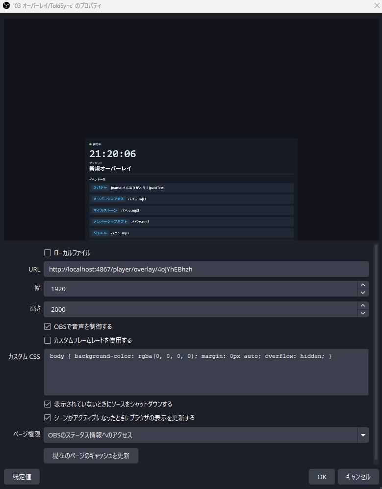

TokiSync Usage Guide
配信や企画演出を「タイミング」で管理し、OBSへ表示するためのツール、TokiSyncの使い方をまとめています。左の目次から、気になる章へどうぞ。
はじめに
TokiSyncとは
TokiSyncは、配信や企画の演出を「タイミング」を軸に管理し、OBSの画面へ表示するためのツールです。「指定の時刻になったら告知画像を出す」「タイマーが0になったら効果音を鳴らす」「あと3日でグッズ発売、という残り時間を常時表示する」といった、時間に連動した演出を設定できます。
何ができるか
TokiSyncには5種類の演出（プリセット種別）があります。
- アラーム: 指定した時刻になったら演出を自動再生します。配信中の時報演出や、定期的な告知などに向いています。
- タイマー: 経過時間を使った演出です。残り時間表示やHPバーのようなステータス表示、指定したタイミングでの自動演出ができ、耐久企画や制限時間チャレンジなどに向いています。
- カウントダウン: 指定した日時までの残り時間、ステータスを表示します。誕生日、グッズ発売、クラウドファンディングの締め切りなどに向いています。また、同時視聴配信の画面演出にも使えるオプションを用意しています
- 時計表示: 現在時刻や日付を指定のフォントで指定の場所に表示させる機能です
- オーバーレイ: ショートカットキー、またはコメントビューア「わんコメ」との連携で、任意のタイミングに演出を単発発火します。スパチャ演出や初見歓迎演出など、他の4種類のような定期的・連続的なタイミングでは表現しづらい演出に向いています。
いずれも、画像・動画・GIF・音声・テキストを組み合わせて表示でき、見た目（フォント・色・位置など）は「スタイル」として各機能での再利用もしやすい形になっています。
基本的な考え方
演出は「いつ実行するか」（Event）と「何を実行するか」（Action）の組み合わせで作ります。
- Event: 発火するタイミング（時刻・経過時間・残り時間・ショートカットキーなど）
- Action: Eventが発火したときに実際に表示・再生する内容（画像・動画・音声・テキスト）
1つのEventに複数のActionを設定でき、順番や有効/無効も自由に変更できます。この考え方はアラーム・タイマー・カウントダウン・オーバーレイに共通する土台なので、4章で詳しく説明します（時計表示のみ、常時表示のためEvent/Actionを持ちません）。
このガイドの読み方
- 3章で画面の基本操作を説明します
- 4章で、アラーム・タイマー・カウントダウン・オーバーレイに共通する「Event/Action」の考え方を説明します。先に読んでおくと5章以降が理解しやすくなります
- 5〜9章はプリセットの種別ごと（アラーム／タイマー／カウントダウン／時計表示／オーバーレイ）の使い方です。作りたいものの章から読んでも構いません
- 10〜12章は素材・見た目（メディア／スタイル／テーマ）の管理方法、13章はOBSへの接続方法です
- 14章以降は設定画面・バックアップ・トラブル対応です
画面の基本操作
TokiSyncの画面は、どの機能を使っていても共通の3つの領域から構成されています。
- ヘッダー（画面上部）
- サイドメニュー（画面左側）
- メインエリア（それぞれの機能の中身）
ヘッダー
画面の一番上に常に表示されている帯です。
- 左端: サイドメニューを開閉するボタン（トップ画面では表示されません。詳しくは後述）
- TokiSyncのロゴとバージョン番号
- 現在開いている画面名（トップ画面以外で表示されます。例:「アラーム管理」「メディア管理」）
- 右端: 選択中プリセットのPlayer画面URL（クリックでコピーできます）。アラーム・タイマー・カウントダウン・時計表示・オーバーレイのいずれかでプリセットを選択しているときだけ表示されます。OBSへの設定方法は13章で説明します

サイドメニュー
画面を切り替えるための項目一覧です。
- ホーム
- アラーム／タイマー／カウントダウン
- 時計表示（上記3つとは別グループとして表示されます。常時表示という性質が異なるためです）
- アセット（メディア／スタイル／テーマ）
- 設定
表示のされ方が画面によって異なります。 トップ画面を開いているときはサイドメニューが常に左側に表示されたままですが、それ以外の画面では既定で隠れていて、ヘッダー左端のボタン（三本線のアイコン）を押すと画面の上に重なる形で開きます。開いている間は背景が暗くなり、暗い部分をクリックするか別の項目を選ぶと閉じます。

トップ（ホーム）画面
TokiSyncを起動して最初に表示される画面です。サイドメニューの「ホーム」からいつでも戻れます。
- ロゴとキャッチコピー
- 「使い方を見る」リンク
- 素材診断の警告（メディアのリンク切れが見つかった場合のみ表示され、押すとメディア管理画面へ移動します）
- 「最近編集したプリセット」一覧: 種別・名前・最終編集日時が新しい順に並び、「開く」を押すとそのプリセットの編集画面へ直接移動します
まずはサイドメニューから作りたい演出の種類（アラーム／タイマー／カウントダウン／時計表示）を選ぶところから始めます。それぞれの作り方は5章以降で説明します。
プリセットの基本（Event / Action）
アラーム・タイマー・カウントダウンの3種類は、共通の「プリセット → イベント → 詳細設定（アクション）」という3階層で演出を組み立てます（時計表示は常時表示のためこの階層を使いません。8章で説明します）。
全体の構造
-
プリセット: 1つの演出セットのまとまりです。各画面の左側にある一覧から、選択・新規作成（「＋ 新規プリセット」）・複製（⧉ボタン。イベント・詳細設定を含めて丸ごとコピーします）・削除・名前変更ができます。プリセットには以下の共通設定があります
- 名前・メモ
- テーマ（「テーマを設定」ボタン。見た目のセット、12章）
- 画面比率（横向き16:9／縦向き9:16。OBSに縦型で表示したい場合は縦向きを選びます）
通常版とPRO版の違い: 通常版では、アラーム／タイマー／カウントダウン／時計表示それぞれ1個までしかプリセットを作成できません（新規作成・複製・削除ともに不可）。複数のプリセットを作りたい場合はPRO版をご利用ください。
- イベント（画面中央の一覧）: 「いつ実行するか」を決めるものです。時刻や経過時間などの発火条件（トリガー）を持ち、1つ以上の詳細設定を含みます。「+ 追加」で新しいイベントを作れます。発火条件の種類は演出の種類（アラーム／タイマー／カウントダウン）によって異なるため、それぞれの章（5〜7章）で説明します
- 詳細設定（アクション）: 「何を実行するか」を決めるものです。1つの詳細設定は、画像・動画・GIF・音声・テキストのいずれか1つと、その見た目（スタイル）、表示時間を持ちます。1つのイベントに複数の詳細設定を追加でき（「＋ 詳細設定を追加」）、同時に複数の演出を重ねて表示できます
Undo/Redo: 選択中プリセットの各種フィールド（メモ・色・サイズ・トリガー設定・詳細設定の内容等）の変更はCtrl+Zで元に戻せます。Ctrl+Y（またはCtrl+Shift+Z）でやり直せます。イベント/詳細設定の追加・削除や、プリセットの追加・削除・複製・切り替えはUndo/Redoの対象外です（それらの操作をまたぐと、それより前の変更はUndoできなくなります）。


詳細設定（アクション）の編集
詳細設定はカード形式で縦に並びます。
- カードをクリックすると開いて編集でき、他のカードは自動的に閉じます（画面が縦に長くなりすぎないようにするためです）
- カード右上のハンドル部分をドラッグすると順番を入れ替えられます
- カードのヘッダーから、複製・削除・有効/無効の切り替えができます


メディアの設定
表示する画像・動画・音声を設定する方法は3つあります。
- ライブラリから選択: 事前にメディア管理画面（10章）で取り込んだ素材から選ぶ
- 新しいファイルを選択: その場でファイルを選ぶと自動的にライブラリへ取り込まれる
- ドラッグ＆ドロップ: ファイルをカードの該当エリアに直接ドロップする

音声ファイルを設定した場合、画面上には表示されないため「配置」タブ（位置・拡大率の設定）は表示されません。また、音声を含む動画・音声ファイルを設定すると、「基本」タブに音量（0〜100%）のスライダーと、設定した音量で試し聞きできる再生ボタンが表示されます。
見た目（スタイル）の設定
文字の色・フォント・位置などの「スタイル」は、以下の方法で設定できます。
- テーマを参照: プリセットに設定したテーマ（12章）の見た目をそのまま使う
- ライブラリから選択: スタイル管理画面（11章）で作成済みのスタイルから選ぶ
- カスタマイズ: ライブラリ参照中に、この箇所だけ値を上書きする（参照元のスタイル自体は変更されない）
- 新規作成: ライブラリを介さず、その場でフォントや位置を直接入力する
- 作成した内容は「ライブラリに登録」ボタンでスタイルとして保存でき、他の詳細設定でも使い回せる

表示時間
表示時間は、次の3種類から選べます。
- 自動: メディアの再生時間に合わせる（動画・音声など）
- 秒数: 指定した秒数だけ表示する
- 次まで: 次のイベントが発火するまで表示し続ける
動画・音声は「ループ再生」も選べます。
回転
詳細設定のテキスト・メディア表示、残り時間テキスト、ステータスバー、時計表示など、画面上のほとんどの表示要素は角度（0〜359度）を指定して回転できます。数値を直接入力するほか、45度刻みでスナップして選べる操作用UIも使えます。未設定の場合は0度（回転なし）として扱われ、既存の演出の見た目には影響しません。

詳細設定をフォルダでまとめる・ランダム再生する
1つのイベント内の詳細設定が増えてきた場合、フォルダを作って整理できます。
- 「フォルダを作成」で新しいフォルダを追加し、詳細設定カードをドラッグしてフォルダの中へ移動できます
- フォルダに入れていない詳細設定も、フォルダと同じ並び替え操作で自由に順番を入れ替えられます（並び替えのためにフォルダへ入れる必要はありません）
- フォルダごとに「ランダム再生」をONにすると、そのフォルダ内の詳細設定から毎回ランダムに1つを選んで再生します（複数パターンのリアクション演出などをランダムに出したい場合に使えます）

アラームを使う
アラームは、指定した時刻になったら自動で演出を再生する機能です。朝枠の開始演出や、毎日決まった時刻の告知などに向いています。
（先に4章「プリセットの基本」を読んでおくと、この章の用語がわかりやすくなります）
1. プリセットを選ぶ・作る
サイドメニューから「アラーム」を開きます。
- 画面左側の一覧から、既存のプリセットを選ぶか、「＋ 新規プリセット」で新しく作ります
- 通常版では、アラームのプリセットは1個までしか作成できません（PRO版では複数作成できます）
プリセットを選ぶと、画面上部でプリセット名の変更・メモの入力・テーマの設定・画面比率（横向き／縦向き）の切り替えができます。

2. イベント（発火時刻）を追加する
画面中央の「イベント」一覧で「+ 追加」を押すと、新しいイベントが追加されます。
- 各イベントには時刻（HH:MM）を設定します。アラームのイベントは時刻順に自動で並び替わります（タイマー／カウントダウンのような手動並び替えはありません）
- イベントごとに有効／無効を切り替えられます。一時的に使わないイベントは無効化しておくと、削除せずに残しておけます
3. 詳細設定（何を再生するか）を追加する
イベントを選択すると、右側に詳細設定（アクション）の編集欄が表示されます。「＋ 詳細設定を追加」で、そのイベントが発火したときに再生する内容を追加します。
- 画像・動画・GIF・音声・テキストのいずれかを選べます
- メディアの選び方、見た目（スタイル）の設定方法、表示時間の考え方は4章を参照してください
- 1つのイベントに複数の詳細設定を追加すれば、同時に複数の演出（例: BGM＋テキスト＋画像）を重ねて再生できます
4. OBSに表示する
編集画面の右上に、選択中プリセットのPlayer画面URLが表示されます（クリックでコピーできます）。このURLをOBSのBrowser Sourceに設定すると、実際の配信画面に演出が表示されます。設定手順は13章で詳しく説明します。
5. プレビューで確認する
詳細設定の編集欄には、実際の見た目に近いプレビューが表示されます。時刻を待たずに動作を確認したい場合は、Player画面（OBSに設定するものと同じ画面）を直接ブラウザで開くと、その場でイベント一覧や現在の状態を確認できます。
詳細設定一覧の下にある「Event全体プレビュー」の再生/停止ボタンでは、そのイベントに設定した内容をまとめて確認できます。入力欄などにフォーカスが無い状態であれば、スペースキーでも再生/停止を切り替えられます。
タイマーを使う
タイマーは、経過時間を使った企画演出です。開始・一時停止・再開・リセットができ、耐久企画や制限時間チャレンジなどに向いています。
（先に4章「プリセットの基本」を読んでおくと、この章の用語がわかりやすくなります）
1. プリセットを選ぶ・作る
サイドメニューから「タイマー」を開きます。プリセットの選択・新規作成・名前変更・メモ・テーマ・画面比率の扱いはアラームと同じです（5章参照）。
2. タイマー時間を設定する
プリセットを選ぶと、イベント一覧の上に「タイマー時間」の入力欄があります。時・分・秒で、タイマーの基準となる時間（例: 10分）を設定します。

3. イベント（発火条件）を追加する
「+ 追加」でイベントを追加し、発火条件（トリガー）を選びます。
- 開始: タイマーをスタートした瞬間に発火する
- 経過: スタートしてから指定した時間が経過したら発火する（H:MM:SS形式で入力）
- %: タイマー時間に対して指定した割合が経過したら発火する
- 残り: 残り時間が指定した時間になったら発火する（H:MM:SS形式で入力）
- 終了: タイマーが0になったら発火する
アラームと異なり、タイマーのイベントは時刻順に自動で並び替わりません。一覧右側のハンドルをドラッグして、好きな順番に並び替えられます。

4. 残り時間テキスト・ステータスバーを表示する
タイマー画面には、詳細設定（画像・動画など）とは別に、常時表示できる2つの要素があります。
- 残り時間テキスト表示: 「00:09:45」のような残り時間の数字を画面に表示します。ON/OFFに加えて、フォント・色・位置などの詳細設定ができます
- ステータスバー表示: 残り時間を視覚的なバーで表示します。形状は「棒」／「円形」から選べ、時間経過とともに減少していきます。「棒」は回転角度を変えることで横棒・縦棒・斜めなど自由な向きにでき、回転方向を反転する設定もあります（円形は12時位置から時計回りに減少）
どちらもタイマー本体の動作とは独立していて、ON/OFFはいつでも切り替えられます。


5. 詳細設定（何を再生するか）を追加する
イベントを選択し、「＋ 詳細設定を追加」で発火時に再生する内容を追加します。設定方法は4章を参照してください。
6. OBS配信中の操作
Player画面（OBSに設定する画面。13章参照）には、以下の操作ボタンが表示されます。
- スタート: タイマーを開始します。スタートを押すまで、どのイベントも発火しません
- 一時停止／再開: カウントを止めたり再開したりできます
- リセット: 経過時間を0に戻します
- +3分／+5分／+10分: 残り時間をワンタッチで延長できます
- 残り時間はPlayer画面上で直接編集することもできます（一時停止中のみ）
- 「終了後にフェードアウトする」設定をONにすると、タイマー終了から5秒後に表示がゆっくり消えていきます（配信画面に0:00の表示が残り続けないようにするための機能です）


カウントダウンを使う
カウントダウンは、指定した日時までの残り時間を表示する機能です。誕生日、グッズ発売、クラウドファンディングの締め切りなどに向いています。
（先に4章「プリセットの基本」を読んでおくと、この章の用語がわかりやすくなります）
1. プリセットを選ぶ・作る
サイドメニューから「カウントダウン」を開きます。プリセットの選択・新規作成・名前変更・メモ・テーマ・画面比率の扱いはアラームと同じです（5章参照）。
2. 目標日時を設定する
プリセットを選ぶと、イベント一覧の上に「目標日時」の入力欄があります。カウントダウンの対象となる日時（例: 2026年8月1日 20:00）を設定します。目標日時は一時停止せず、常に現在時刻からのカウントダウンとして動作し続けます。

3. イベント（発火条件）を追加する
「+ 追加」でイベントを追加し、発火条件（トリガー）を選びます。
- 開始: Player画面を開いた瞬間（自動的に開始時刻として記録される）に発火する
- 経過: 開始時刻から指定した時間が経過したら発火する（H:MM:SS形式で入力）
- %: 開始からの経過を割合で見て、指定した割合に達したら発火する
- 残り: 目標日時までの残りが指定した時間になったら発火する（H:MM:SS形式で入力）
- 終了: 目標日時に到達したら発火する
- 終了後: 目標日時到達後、指定した時間が経過したら発火する（後述の「終了後カウントアップ」がONのときに使う）
タイマーと同様、イベントはドラッグで自由に並び替えられます（時刻順の自動並び替えはありません）。

開始時刻と目標日時の関係
目標日時までのカウントダウン自体は常に進み続けますが、「開始」「経過」「%」トリガーは、Player画面を開いた時点の時刻を基準に発火します。 Player画面を表示した瞬間が自動的に開始時刻として記録されます（スタートボタンなどの操作は不要です）。
- 「開始時刻をリセット」を押すと、開始時刻を現在時刻に取り直せます
- 開始時刻はPlayer画面から直接、日時を指定して編集することもできます
4. 終了後カウントアップ
目標日時に到達した後、残り時間の表示を「経過時間」の表示に切り替えて数え続ける機能です。「終了後カウントアップ」をONにすると使えます。
- 終了条件を設けるをONにすると、カウントアップを一定時間で止められます（「継続時間」で指定）。OFFの場合は無期限にカウントアップし続けます
- ステータスバーを表示している場合、カウントアップ中はカウントダウンと逆方向（空 → 満タン）に表示が進みます

5. 残り時間テキスト・ステータスバー、詳細設定の追加
タイマー（6章）と同じ仕組みです。残り時間テキスト表示・ステータスバー表示のON/OFFと詳細設定、詳細設定（画像・動画などの中身）の追加方法はそちらを参照してください。
6. OBS配信中の操作
Player画面（OBSに設定する画面。13章参照）には、以下の操作が表示されます。
- 開始時刻をリセット ／ 開始時刻の直接編集: 「開始」「経過」「%」トリガーの基準時刻を再設定できます（Player画面を開いた時点で自動的に開始時刻として記録されているため、通常は操作不要です）
- 目標日時の直接編集
- +3分／+5分／+10分: 目標日時をワンタッチで延長できます
- 終了後カウントアップ関連の設定（ON/OFF・終了条件・継続時間）をPlayer画面からも変更できます
- 「終了後にフェードアウトする」設定をONにすると、終了から5秒後に表示がゆっくり消えていきます（カウントアップが無期限の場合はフェードアウトしません）


時計表示を使う
時計表示は、現在時刻（と任意で日付）をOBS上に常設表示する機能です。同時視聴の開始時刻確認や、配信画面の常設時計として使えます。
アラーム・タイマー・カウントダウンと異なり、イベントや詳細設定という概念を持ちません（発火タイミングが無く、常に表示され続けるためです）。プリセットを作ったら、そのまま表示内容を設定するだけです。
1. プリセットを選ぶ・作る
サイドメニューから「時計表示」を開きます。プリセットの選択・新規作成・名前変更・メモ・テーマ・画面比率の扱いは他の画面と同じです（5章参照）。

2. 表示項目を設定する
- 日付を表示: ON/OFFで日付の表示・非表示を切り替えます
- 秒を表示: ON/OFFで秒の表示・非表示を切り替えます（表示時は「秒のサイズ(%)」で時刻に対する大きさを調整できます）
- 時刻表記: 24時間表記／12時間表記(AM/PM)を選べます
- 日付フォーマット: 「2026/07/09」「07/09」「2026年7月9日」「07/09(木)」から選べます
3. 表示位置を調整する
- 時刻の表示位置は、基準位置（左/中央/右・上/中央/下）と、位置プリセットボタン・スライダーで細かく調整できます
- 日付の表示位置は、既定では時刻の位置に合わせて自動配置されます。「日付の表示位置を調節」をONにすると、日付だけ独立して位置を調整できます
- 時刻表示は回転角度（0〜359度）も設定できます。未設定（0度）であれば従来どおりの表示です

4. 配色・フォントを設定する
- 文字サイズ、時刻の色を設定できます
- 「日付を別色にする」「秒を別色にする」をそれぞれONにすると、時刻とは異なる色を個別に指定できます
- 見た目の設定方法（テーマを参照／ライブラリから選択／カスタマイズ）は4章の「見た目（スタイル）の設定」と同じ考え方です

5. OBSに表示する
編集画面の右上に、選択中プリセットのPlayer画面URLが表示されます。このURLをOBSのBrowser Sourceに設定すると、常時時計が表示されます。設定手順は13章で説明します。時計表示にはイベントが無いため、Player画面には操作ボタンやイベント一覧はなく、常に現在時刻を表示し続けるだけのシンプルな画面になります（接続状態などの簡易表示のみ付随します）。

オーバーレイを使う
オーバーレイは、ショートカットキー、またはコメントビューア「わんコメ」との連携によって、任意のタイミングで演出を単発発火するプリセット種別です。スパチャ演出、初見歓迎演出、その他OBS単体では組みづらい画面上の演出などに向いています。（先に4章「プリセットの基本」を読んでおくと、この章の用語がわかりやすくなります）
1. プリセットを選ぶ・作る
サイドメニューから「オーバーレイ」を開きます。プリセットの選択・新規作成・名前変更・メモ・テーマ・画面比率の扱いは他の画面と同じです（5章参照）。通常版では、オーバーレイのプリセットも1個までしか作成できません（PRO版では複数作成できます）。

2. イベント（発火方法）を追加する
「+ 追加」でイベントを追加し、発火方法を選びます。他のプリセット種別と異なり、時刻や経過時間ではなく「ショートカットキー」または「わんコメ連動」のどちらかを選ぶ形になります。
ショートカットキーで発火する
入力欄をクリックしてキーを押すと、そのキーの組み合わせが登録されます。
- 修飾キー（Ctrl／Alt／Shift）のいずれかを必ず含める必要があります（他のアプリのショートカットと衝突しにくくするためです）
- テンキーのキーも登録できます
- 登録したショートカットは、TokiSyncがバックグラウンドにあっても、OBSなど別のアプリにフォーカスが当たっていても発火します。 配信中、他のソフトを操作しながらでもそのまま押せます
- 登録済みのショートカットは入力欄内の「✕」で解除できます
- Mac版は現在対応していないため、修飾キーは「Ctrl」表記のみです

わんコメ連動で発火する
わんコメで受信したスパチャ・メンバーシップ加入などのコメントをきっかけに、TokiSyncのオーバーレイを自動発火できます。「わんコメ連動」を選ぶと、対象にする種別を選べます。
- スパチャ: スーパーチャット・スーパーステッカー。色帯（金額帯）を指定して、特定の色帯のときだけ発火する設定もできます（未選択の場合はすべての色帯で発火）
- メンバーシップ加入
- マイルストーン（配信の節目コメント）
- メンバーシップギフト
わんコメ連動のイベントは、プリセットを横断してすべてのオーバーレイプリセットの中から条件に一致するイベントをまとめて発火します。1つのプリセットしか見ていないつもりでも、他のオーバーレイプリセットに同条件のイベントがあれば、そちらも同時に発火する点に注意してください。

わんコメ側にテンプレートを設定する
わんコメからTokiSyncへコメントを通知するには、専用のテンプレートを、わんコメの「プラグイン」としてあらかじめ読み込んでおく必要があります。テンプレートはTokiSync本体には同梱されておらず、BOOTHから別途入手します。
- BOOTHの配布ページから「TokiSync-onecomme-template」のzipをダウンロードし、任意のフォルダに展開します
- わんコメを開き、トップ画面から「プラグイン」の設定に進みます
- 「テンプレート追加」から、展開したフォルダを指定して読み込みます


TokiSync側でプレイヤー配信ポート番号（14章）を既定（4867）から変更している場合は、テンプレート内のポート番号もその値に書き換え、わんコメ側でテンプレートを読み込み直す（またはわんコメを再起動する）必要があります。
わんコメの無料版をご利用の場合、わんコメの利用規約により、配信の概要欄などに「配信者のためのコメントアプリ「わんコメ」https://onecomme.com」のようなクレジット表記をお願いします（リンクの掲載は可能であれば、との案内です。概要欄がない・文字数制限が厳しい場合は省略可）。
3. 詳細設定（何を再生するか）を追加する
イベントを選択し、「＋ 詳細設定を追加」で発火時に再生する内容を追加します。設定方法は4章を参照してください。
「わんコメ連動」のイベントでは、TEXT種別の詳細設定の文字内容に{name}と入力しておくと、実際に発火した際にギフトを送った人の表示名へ自動的に置き換わります（例: {name}さん、ありがとうございます！ → 〇〇さん、ありがとうございます！）。ショートカットキーで発火した場合など、表示名が取得できない場合は{name}は空文字に置き換わります。
4. OBSに表示する
編集画面の右上に、選択中プリセットのPlayer画面URLが表示されます。このURLをOBSのBrowser Sourceに設定する手順は13章と同じです。オーバーレイのPlayer画面は、他のプリセット種別と異なりアラームに近い「イベント一覧」形式で表示され、各イベントのショートカットキーと概要を確認できます。
メディア（素材）を管理する
メディア管理画面では、演出に使う画像・動画・GIF・音声を一覧で管理します。サイドメニューの「アセット」グループから「メディア」を開きます。
取り込み方法
画面下部のドロップエリアに、以下のいずれかの方法でファイルを追加します。
- ファイルをドラッグ＆ドロップする
- ドロップエリアをクリックしてファイルを選択する
画像・動画・音声は自動的に種類ごとに振り分けられます。詳細設定（アクション）の編集画面から直接ファイルを選んだ場合も、自動的にここへ登録されます（4章参照）。
一覧の見方
- タブで「画像」「動画」（GIFも動画タブに含まれます）「音声」を切り替えられます
- 参照先ファイルが見つからないメディアがある場合、「見つからないファイル」タブが追加で表示されます
- 各カードには使用状況（「◯件で使用中」または「未使用」）が表示され、クリックするとどのプリセット・イベントで使われているかを確認できます

ファイルが見つからない場合
PCの移動やファイルの削除などで参照先が見つからなくなったメディアは、「見つからないファイル」タブに一覧表示されます。「ファイルを再設定」から、新しい参照先ファイルを選び直せます。
アプリ起動時、およびこの画面を開いたタイミングで、自動的にファイルの有無がチェックされます（設定画面の「メディア診断」。14章参照）。
取り込み方式（コピー／参照）について
新しくメディアを取り込む際、ファイルをTokiSyncのデータフォルダへコピーするか、元の場所のファイルをそのまま参照するかを選べます。既定は「コピー」です。この設定は14章「設定画面」の「メディアの取り込み方式」で変更できます。「参照」を選んだ場合、PCの移行時にファイルの参照が切れる可能性がある点に注意してください。
削除について
不要になったメディアはカードから削除できます。他のプリセットで使用中のメディアを削除しようとすると、影響を受けるイベント数が警告として表示されます。どのプリセットからも参照されていないメディアをまとめて削除したい場合は、14章の「未使用アセットのクリーンアップ」が便利です。
スタイル（見た目）を管理する
スタイルは、文字やステータスバーの見た目（フォント・色・位置・形状など）をひとまとめにして、複数のプリセット・詳細設定で使い回すための機能です。サイドメニューの「アセット」グループから「スタイル」を開きます。
スタイルの種類
文字の見た目（フォント・サイズ・色・位置・影・縁取りなど）。詳細設定のテキスト表示や、タイマー／カウントダウンの残り時間テキスト、時計表示に使えます。
ステータスバーの見た目（形状・色・太さなど）。形状は横棒／縦棒／円形から選べます。
タブで一覧を切り替えられます。

スタイルを作る・編集する
一覧の「＋ 新規登録」から新しいスタイルを作成するか、既存のスタイルをクリックして編集画面を開きます。
- スタイル名・説明文を設定します
- 編集画面の右側には、Player画面と同じ比率（16:9・9:16を切り替え可能）のプレビューが表示され、実際の見た目を確認しながら調整できます
- テキストスタイルはプレビュー用のサンプルテキストを入力できます（保存はされません）

使い方
詳細設定（アクション）や残り時間テキスト、ステータスバー、時計表示の編集画面から「ライブラリから選択」でスタイルを選ぶと、そのスタイルの見た目がそのまま使われます。選択後も「カスタマイズ」でその箇所だけ個別に上書きでき、元のスタイル自体には影響しません。詳しくは4章を参照してください。
複製・削除
一覧の各行から複製・削除ができます。他の箇所で使用中のスタイルを削除しようとすると、使用中である旨の警告が表示されます。
テーマ（デザインセット）を管理する
テーマは、複数のスタイルをひとまとめにした「デザインセット」です。プリセットに1つテーマを設定しておくと、そのプリセット内の詳細設定・残り時間テキスト・ステータスバー・時計表示が、詳細な見た目を個別に設定しなくても自動的に統一されたデザインになります。サイドメニューの「アセット」グループから「テーマ」を開きます。
テーマに紐づけられるもの
1つのテーマには、最大4種類のスタイル（11章）を紐づけられます。
- テキストスタイル（詳細設定のテキスト表示用）
- タイマー残り時間スタイル
- ステータスバースタイル
- 時計表示スタイル
一覧には「◯ / 4 設定済み」のように、いくつ設定済みかが表示されます。すべて設定する必要はなく、必要な項目だけ紐づければ構いません。

テーマを作る・編集する
一覧の「＋ 新規登録」から新規作成するか、既存のテーマをクリックして編集します。名前・説明文を入力し、各項目に「ライブラリから選択」でスタイルを紐づけます（「解除」で未設定に戻せます）。
使い方
各プリセットの編集画面上部にある「テーマを設定」から、作成したテーマを選択します。プリセット内の詳細設定・残り時間テキスト・ステータスバー・時計表示それぞれで「テーマを参照」を選ぶと、テーマに紐づいたスタイルがそのまま使われます（4章参照）。
テーマ自体にはスタイルへの参照だけが保存されており、参照先のスタイルを編集すると、そのテーマを使っているすべての箇所に反映されます。
エクスポート・インポート
一覧の各行から「エクスポート」でテーマをファイルとして書き出し、「インポート」で読み込めます。デザインを別のPCへ持っていったり、他の人と共有したりする際に使えます。
OBSに表示する
TokiSyncで作った演出は、OBSの「ブラウザ」ソース（Browser Source）にPlayer画面のURLを設定することで、配信画面に表示されます。
1. Player画面URLをコピーする
アラーム・タイマー・カウントダウン・時計表示のいずれかの編集画面でプリセットを選択すると、画面右上のヘッダーにそのプリセットのURLが表示されます。クリックするとコピーできます（3章参照）。URLは次のような形式です。
http://localhost:4867/player/タイマー/プリセット固有のキー
TokiSyncを起動しているPC内で完結するローカルなアドレスです。インターネットには公開されず、外部からアクセスされることもありません。

2. OBSにブラウザソースを追加する
- OBSの「ソース」パネルで「＋」→「ブラウザ」を選択し、新規作成します
- 「URL」欄に、コピーしたPlayer画面URLを貼り付けます
- 「幅」「高さ」を設定します。配信に映したいサイズ（横向き16:9なら1920×1080、縦向き9:16なら1080×1920）だけでは足りません。すべてのPlayer画面には、配信に映る部分とは別に操作用のUI（接続状態・時計・イベント一覧・操作ボタンなど）が付随しており、その分の余白が必要です。 見切れやスクロールバーが出る場合の対処は16章のFAQを参照してください
- OKで追加すると、配信画面上にその演出が表示されます
プリセットの画面比率は、各編集画面の「画面比率」設定で切り替えられます（4章参照）。

3. 設定変更の反映について
TokiSync側でイベントの追加・変更・削除、詳細設定の追加・変更・削除・並び替えを保存すると、OBSに表示中のPlayer画面は自動的に最新の内容へ更新されます。ブラウザソースを都度作り直す必要はありません。
ただし、イベント自体の並び替え（ドラッグ&ドロップでの順序変更）だけは、現状この自動更新の対象外です。 イベントを並び替えた場合は、OBS側でブラウザソースを手動更新（右クリック→「更新」）してください。
また、TokiSyncアプリを再起動すると、OBSに表示中のPlayer画面との接続が一度切れます（自動的には再接続しません）。Player画面上に再読み込みを促す表示が出るので、その場合もOBS側でブラウザソースを更新してください。設定画面（14章）でポート番号やデータフォルダを変更した際は、再起動が必要になるため、あわせてブラウザソースの更新も必要になります。
4. 注意点
- Player画面はTokiSyncアプリ本体が起動している間のみ動作します。配信中はTokiSyncを閉じないようにしてください
- 設定画面（14章）でプレイヤー配信ポート番号を変更した場合、URLの一部（
4867の部分）が変わります。変更後は改めてURLをコピーし直し、OBS側のブラウザソースにも設定し直してください（反映にはTokiSyncの再起動が必要です）
設定画面
サイドメニューの「設定」から開きます。アプリ全体に関わる設定をまとめた画面です。
アプリデータのバックアップ
プリセット・イベント・スタイル・テーマ・メディア（コピー取り込み分の実ファイルを含む）など、アプリの全データを1つのzipファイルへ書き出し・読み込みできます。PCの移行時に使います。手順は15章で詳しく説明します。
保存先・接続設定
- アプリデータの保存先フォルダ: 現在データが保存されている場所です。「変更…」から別の場所へ移せます。移動先には空のフォルダを選ぶ必要があります。現在のデータはコピーされ、元の場所のデータは自動削除されません（不要であれば手動で削除してください）。反映には次回起動が必要です
- プレイヤー配信ポート番号: Player画面URL（13章）で使われるポート番号です（既定は4867）。変更すると、OBSに設定しているURLも変更後のものに更新し直す必要があります。反映には次回起動が必要です
わんコメ連携（9章）を使っている場合、ポート番号を変更したらわんコメ側のテンプレートにもポート番号の書き換え・再読み込みが必要です。詳しくは9章を参照してください。

メディアの取り込み方式
新しくメディアを取り込むときの既定の方式を選びます。「コピー」（推奨）はTokiSyncのデータフォルダへファイルを複製し、「参照のみ」は元ファイルをそのまま参照します。参照のみの場合、PC移行時にファイルの参照が切れる可能性があります。すでに取り込み済みのメディアには影響しません。
起動時の挙動
- OS起動時にTokiSyncを自動起動する
- 起動時は最小化した状態で起動する（タスクバー上で最小化された状態から始まります）
- 前回開いていたプリセットを起動時に復元する（ONの場合、最後に開いていたプリセットの編集画面が自動的に表示されます）
アプリ画面の配色
管理画面（この画面自体）の配色を、ダーク／ライト／OSに合わせる、から選べます。配信画面（Player画面）の見た目とは別の設定で、選択するとすぐに切り替わります。
メディア診断
アプリ起動時、および「メディア管理」画面を開いたタイミングで、参照先ファイルが見つからないメディアを自動でチェックします（説明のみの項目です。結果はメディア管理画面の「見つからないファイル」タブで確認します。10章参照）。
未使用アセットのクリーンアップ
どのプリセットからも参照されていないメディア・スタイルの件数が表示され、「クリーンアップを実行」でまとめて削除できます。テーマにのみ紐づいているスタイル（そのテーマがどのプリセットにも使われていない場合も含む）は、テーマが壊れないよう「使用中」として削除対象から除外されます。
削除すると元に戻せません。心配な場合は先にバックアップを取ってください。
バックアップとデータの引っ越し
PCを買い替える場合や、複数のPCでTokiSyncの設定を共有したい場合は、バックアップ機能を使ってデータを丸ごと移行できます。設定画面（14章）の「アプリデータのバックアップ」から操作します。
バックアップを作る（エクスポート）
- 設定画面を開き、「すべての設定をエクスポート」を押します
- 保存先を選ぶダイアログが開くので、保存したい場所とファイル名を指定します（既定のファイル名には日付が入ります）
- 保存が完了すると、保存先のパスが画面に表示されます
バックアップには、プリセット・イベント・詳細設定・スタイル・テーマと、コピー方式で取り込んだメディアの実ファイルが1つのzipファイルにまとめられます。参照方式で取り込んだメディアは、元ファイルが別の場所にあるため含まれません。
バックアップから復元する（インポート）
- 新しいPC（または同じPC）でTokiSyncを起動し、設定画面を開きます
- 「インポートして復元」を押し、確認メッセージが表示されたら内容を確認して「削除する」（実行）を選びます
復元すると、現在TokiSyncに保存されているプリセット・イベント・スタイル・テーマ・メディアはすべてバックアップの内容で置き換えられます。この操作は取り消せません。復元前に現在のデータも必要であれば、先に別途バックアップを取っておいてください。
- バックアップファイルを選択すると復元が始まります。完了すると、TokiSyncが自動的に再起動します
移行の流れ（PCを買い替える場合の例）
- 元のPCで「すべての設定をエクスポート」し、バックアップファイルをUSBメモリやクラウドストレージなどへ保存する
- 新しいPCにTokiSyncをインストールし、起動する
- 新しいPCの設定画面から、保存しておいたバックアップファイルを「インポートして復元」する
サムネイル画像について
バックアップにはサムネイル画像（一覧のプレビュー用の小さい画像）は含まれません。復元後、メディア管理画面を開くと自動的に再生成されます。
よくある質問／トラブルシューティング
OBSに演出が表示されない
- TokiSyncアプリ本体が起動したままになっているか確認してください（13章）
- OBSのブラウザソースに設定したURLが正しいか確認してください。ヘッダーから改めてURLをコピーし直すと確実です
- プレイヤー配信ポート番号（14章）を変更した場合は、URLが変わっています。設定画面で現在のポート番号を確認し、OBS側のURLも合わせて更新してください
- それでも表示されない場合は、OBS側でブラウザソースを右クリックして「更新」してみてください
OBS上でPlayer画面のUIが見切れる／スクロールバーが出る
すべてのPlayer画面は、配信に映る部分（RenderArea）の下（縦向きの場合は横）に、接続状態・時計・イベント一覧・操作ボタンなどの操作用UIエリアが続けて配置されています。ブラウザソースの「幅」「高さ」を配信サイズ（例: 1920×1080）ぴったりに設定すると、この操作用UIが見切れたりスクロールバーが出たりします。
- ブラウザソースの高さ（縦向きの場合は幅）を、配信サイズより大きめに設定し、UI全体がスクロールなしで収まるようにしてください
目安のサイズ（カウントダウンの例。操作フォーム＋イベント一覧の1行目まで見えるサイズ感）
| 向き | サイズ | 根拠 |
|---|---|---|
| 縦向き（9:16） | 幅1640 × 高さ1920 | 正確な値。UIエリアの高さは常にRenderAreaと同じ高さに固定される作りのため、幅（RenderArea 1080 + UIエリア分）だけ広げれば過不足なく収まります。UIエリアの幅はプリセット種別によって多少異なります |
| 横向き（16:9） | 幅1920 × 高さ2000前後 | 目安。UIエリアの高さが中身の量に応じて伸び縮みする作りのため決まった数値はなく、イベント数などによって前後します。実際に開いて過不足を見ながら調整してください |
メディアが「ファイルが見つかりません」と表示される
- ファイルを移動・削除・リネームした可能性があります。メディア管理画面（10章）の「見つからないファイル」タブから「ファイルを再設定」で新しい場所を指定し直してください
- 「参照のみ」方式で取り込んだメディアは、元ファイルがPC内に存在している必要があります。ファイルを別のPCへ移した場合などに発生しやすい現象です
プリセットを新規作成・削除できない
通常版では、アラーム／タイマー／カウントダウン／時計表示それぞれ1個までしかプリセットを作成できません（4章）。複数作りたい場合はPRO版が必要です。
設定を変更したのに反映されない
プレイヤー配信ポート番号、アプリデータの保存先フォルダの変更は、次回起動後に反映されます（14章）。変更後は一度TokiSyncを再起動してください。
バックアップから復元した直後、サムネイルが表示されない
正常な動作です。バックアップにはサムネイル画像自体は含まれておらず、復元後にメディア管理画面を開くと自動的に再生成されます（15章）。
配信中、PCの動作が重くなる／TokiSyncのメモリ使用量が気になる
TokiSyncはある程度のメモリ（常駐で数百MB程度）を使用します。OBSやゲームなど他のアプリと同時に動かす配信環境で動作が重いと感じた場合は、以下を試してみてください。
- 設定画面の「未使用アセットのクリーンアップ」で、どのプリセットからも参照されていないメディア・スタイルを整理する
- 設定画面の「未アクセスプリセットの整理」で、30日以上配信で使われていないプリセットを確認し、不要であれば削除する
ただし、メモリ使用量の大部分はTokiSyncが内蔵しているブラウザエンジンの基本コストのため、上記を行っても劇的には減りません。配信用PCのスペックと相談しながら、他のアプリと合わせて全体のリソース配分を調整してください。
TokiSync 使い方ガイド。スクリーンショットは今後追加予定です。